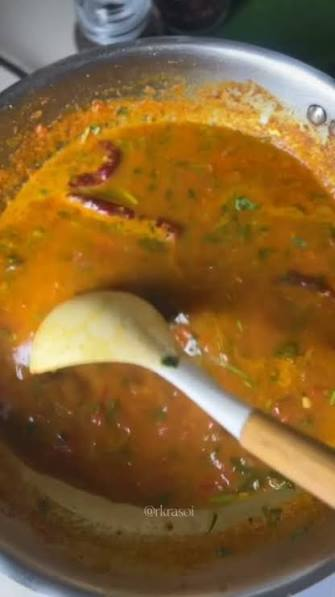

Masala Dal Fry

Prep time: 5 mins Cook time: 25 mins Serves: 2-3
Ingredients
- 1 cup toor dal (yellow lentils)
- 1 onion, chopped
- 1 tomato, chopped
- 2 cloves garlic, chopped
- 1/2 tsp cumin seeds
- 1/2 tsp turmeric powder
- 1 tsp red chili powder
- 1 tbsp ghee or oil
- Salt to taste
- Coriander leaves, chopped
Steps
- Boil the dal with turmeric and salt until soft, then mash it slightly.
- In a separate pan, heat ghee, add cumin seeds, garlic, and onion, and sauté until golden.
- Add tomato and chili powder, cook until soft.
- Pour this tempering into the boiled dal, mix well, and simmer for 5 minutes.
- Garnish with coriander. Proof that hostel dal doesn't have to be drank like water.
Backstory: Used it when our hostel's Dal Fry was just water with haldi. (Original recipe by The Boys.)